1、主题
介绍如果通过Pycharm使用本地Git集。
2、准备工作
（1）PyCharm版本为2.7或更高
（2）已经创建一个工程
（3）Git插件可用，对应可执行文件在 Git page页面正确配置
3、创建一个Git集
按下Alt+`显示常用的VCS命令（也可以通过主菜单VCS→VCS Operations Popup），选择Create Git repository命令：
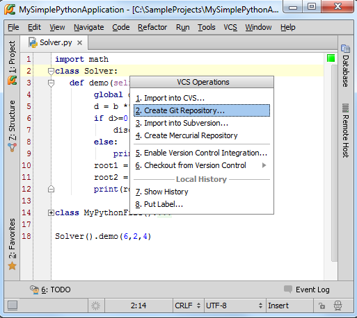
Git通过在父目录下创建一个.git文件夹来安装本地版本库。此处我们选择在根目录下创建.git目录：
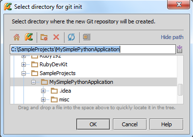
4、Pycharm用户界面变化
（1）出现Changes tool window窗口
（2）Solver.py文件名变色
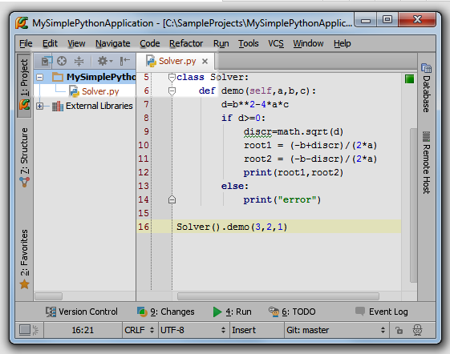
这也意味着这个新的文件尚未添加版本控制（稍后介绍）。
（3）打开设置对话框（Ctrl+Alt+S），单击 Version Control，发现MySimplePythonApplication目录已经和Git关联：
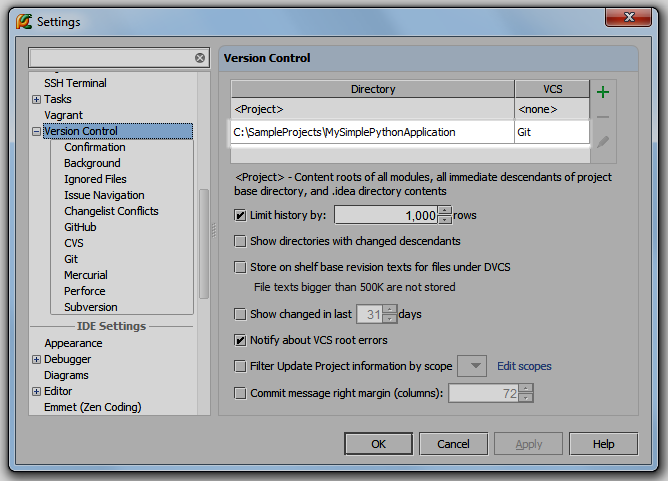
5、为文件添加版本控制
方法put a file under version control，这里例举一种。选择Solver.py文件，按下Ctrl+Alt+A。
Solver.py文件变为绿色，意味着已经进行了版本控制，但尚未托管：
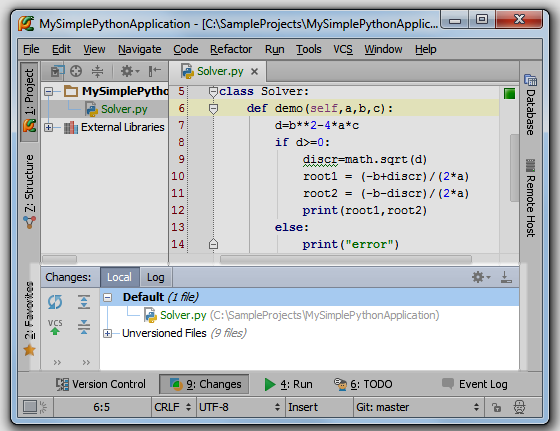
6、提交本地版本库
在Changes tool window窗口中选择 Solver.py文件，按下Ctrl+K，输入信息，单击Commit。
打开Changes tool window的Log tab选项卡查看;
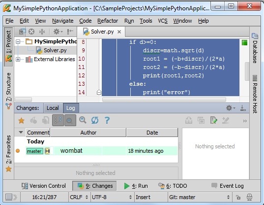
7、查看当前分支
两种方式：
第一，使用主菜单命令VCS→Git→Branches，在弹出的窗口中查看：
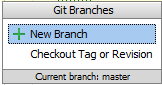
第二，使用状态栏上的Git组件：
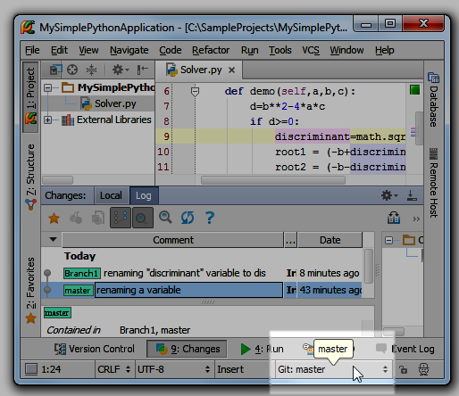
8、更改主分支代码
以重命名为例。将光标定位在discr符号上，按下Shift+F6，输入新名字discriminant。
注意此时左槽会产生相应标记：
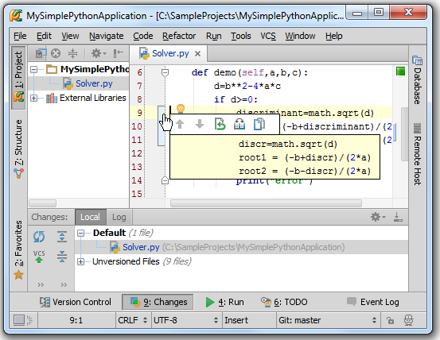
单击这个标记，Pycharm会弹出窗口提示当前所做更改。按下Ctrl+K快捷键更新代码。
9、创建一个新的分支
单击状态栏上的分支图标，输入名称：
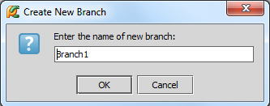
新分支现在在当前 Changes tool window窗口中，作为一个选项卡：
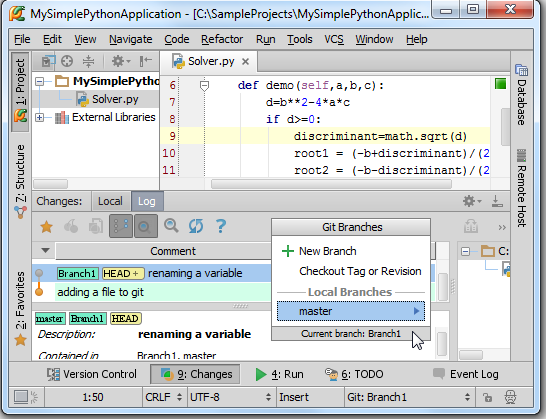
接下来再从主分支中创建第二个分支（Branch2）。
10、更改新分支中的代码
切换到分支1：
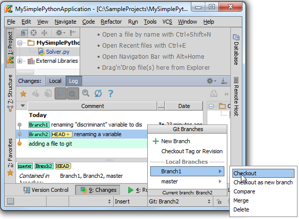
将光标定位在discriminant符号上，按下Shift+F6，输入简写，例如dis，然后按下Ctrl+K托管更改。
对分支2进行同样操作。
11、合并分支
只能将当前分支合并到其他分支上。使用VCS→Git→Merge Changes的主菜单命令：
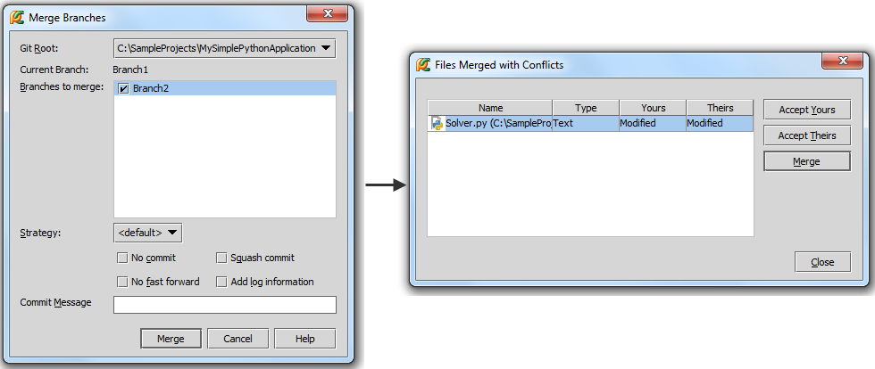
选择接受这些更改并托管，再次查看，发现比之前更复杂了：
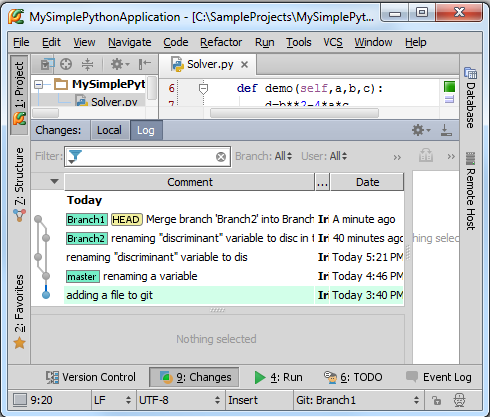